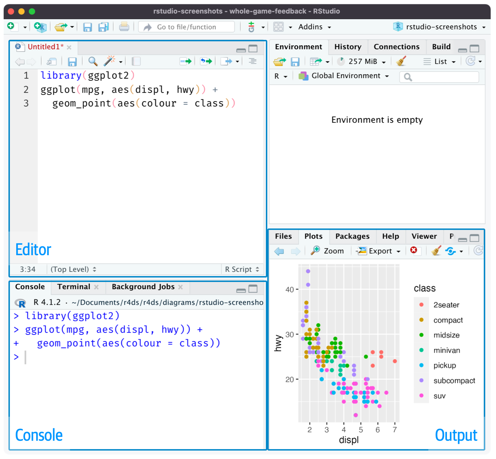
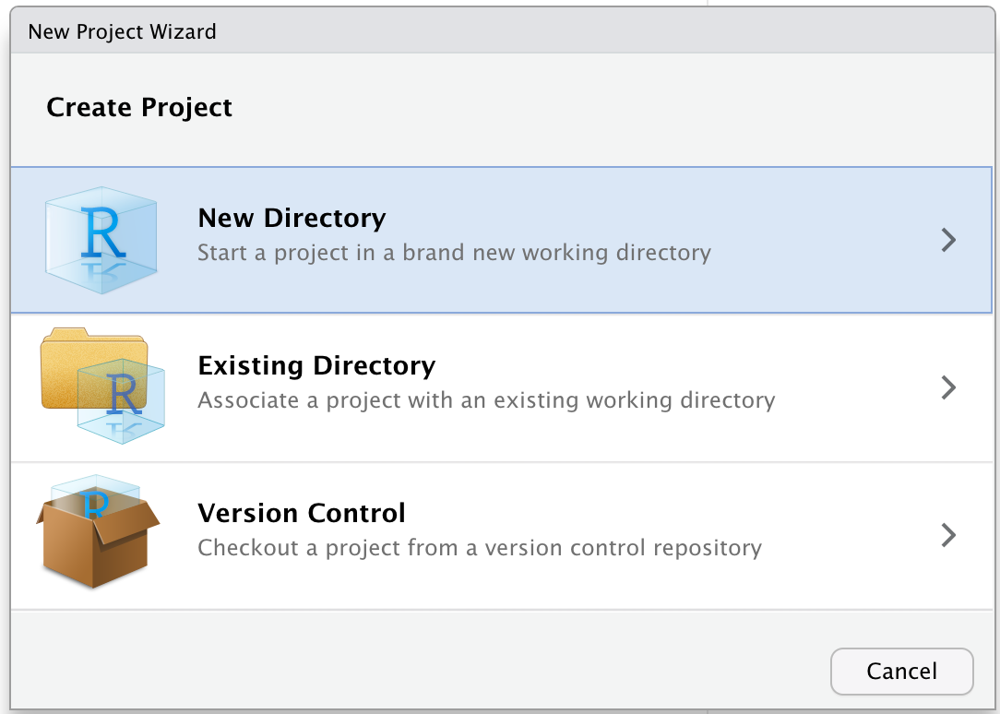
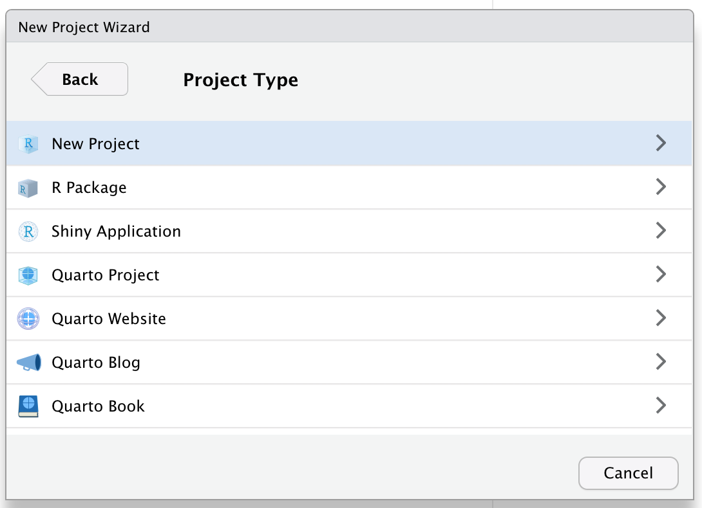

You are reading the work-in-progress second edition of R for Data Science. This chapter should be readable but is currently undergoing final polishing. You can find the complete first edition at https://r4ds.had.co.nz.
If you’re using RStudio server, your R session is never restarted by default. When you close your RStudio server tab, it might feel like you’re closing R, but the server actually keeps it running in the background. The next time you return, you’ll be in exactly the same place you left. This makes it even more important to regularly restart R so that you’re starting with a refresh slate.
This chapter will introduce you to two very important tools for organizing your code: scripts and projects.
Scripts
So far, you have used the console to run code. That’s a great place to start, but you’ll find it gets cramped pretty quickly as you create more complex ggplot2 graphics and longer dplyr pipelines. To give yourself more room to work, use the script editor. Open it up by clicking the File menu, and selecting New File, then R script, or using the keyboard shortcut Cmd/Ctrl + Shift + N. Now you’ll see four panes, as in #fig-rstudio-script. The script editor is a great place to put code you care about. Keep experimenting in the console, but once you have written code that works and does what you want, put it in the script editor.

Figure 9.1: Opening the script editor adds a new pane at the top-left of the IDE.
Running code
The script editor is a great place to build up complex ggplot2 plots or long sequences of dplyr manipulations. The key to using the script editor effectively is to memorize one of the most important keyboard shortcuts: Cmd/Ctrl + Enter. This executes the current R expression in the console. For example, take the code below. If your cursor is at █, pressing Cmd/Ctrl + Enter will run the complete command that generates not_cancelled. It will also move the cursor to the next statement (beginning with not_cancelled |>). That makes it easy to step through your complete script by repeatedly pressing Cmd/Ctrl + Enter.
Instead of running your code expression-by-expression, you can also execute the complete script in one step with Cmd/Ctrl + Shift + S. Doing this regularly is a great way to ensure that you’ve captured all the important parts of your code in the script.
We recommend that you always start your script with the packages that you need. That way, if you share your code with others, they can easily see which packages they need to install. Note, however, that you should never include install.packages() in a script that you share. It’s very antisocial to change settings on someone else’s computer!
When working through future chapters, we highly recommend starting in the script editor and practicing your keyboard shortcuts. Over time, sending code to the console in this way will become so natural that you won’t even think about it.
RStudio diagnostics
In script editor, RStudio will highlight syntax errors with a red squiggly line and a cross in the sidebar:
Hover over the cross to see what the problem is:
RStudio will also let you know about potential problems:
Saving and naming
RStudio automatically saves the contents of the script editor when you quit, and automatically reloads it when you re-open. Nevertheless, it’s a good idea to avoid Untitled1, Untitled2, Untitled3, and so on and instead save your scripts and to give them informative names.
It might be tempting to name your files code.R or myscript.R, but you should think a bit harder before choosing a name for your file. Three important principles for file naming are as follows:
File names should be machine readable: avoid spaces, symbols, and special characters. Don’t rely on case sensitivity to distinguish files.
File names should be human readable: use file names to describe what’s in the file.
File names should play well with default ordering: start file names with numbers so that alphabetical sorting puts them in the order they get used.
For example, suppose you have the following files in a project folder.
alternative model.R
code for exploratory analysis.r
finalreport.qmd
FinalReport.qmd
fig 1.png
Figure_02.png
model_first_try.R
run-first.r
temp.txt
There are a variety of problems here: it’s hard to find which file to run first, file names contain spaces, there are two files with the same name but different capitalization (finalreport vs. FinalReportNot to mention that you’re tempting fate by using “final” in the name 😆 The comic piled higher and deeper has a fun strip on this.), and some names don’t describe their contents (run-first and temp).
Here’s better way of naming and organizing the same set of files:
Numbering the key scripts make it obvious in which order to run them and a consistent naming scheme makes it easier to see what varies. Additionally, the figures are labelled similarly, the reports are distinguished by dates included in the file names, and temp is renamed to report-draft-notes to better describe its contents.
Projects
One day, you will need to quit R, go do something else, and return to your analysis later. One day, you will be working on multiple analyses simultaneously and you want to keep them separate. One day, you will need to bring data from the outside world into R and send numerical results and figures from R back out into the world.
To handle these real life situations, you need to make two decisions:
What is the source of truth? What will you save as your lasting record of what happened?
Where does your analysis live?
What is the source of truth?
As a beginning R user, it’s OK to consider your environment (i.e. the objects listed in the environment pane) to be your analysis. However, in the long run, you’ll be much better off if you ensure that your R scripts are the source of truth. With your R scripts (and your data files), you can recreate the environment. With only your environment, it’s much harder to recreate your R scripts: you’ll either have to retype a lot of code from memory (inevitably making mistakes along the way) or you’ll have to carefully mine your R history.
To help keep your R scripts as the source of truth for your analysis, we highly recommend that you instruct RStudio not to preserve your workspace between sessions. You can do this either by running usethis::use_blank_slate()If you don’t have usethis installed, you can install it with install.packages("usethis"). or by mimicking the options shown in #fig-blank-slate. This will cause you some short-term pain, because now when you restart RStudio, it will no longer remember the code that you ran last time. But this short-term pain saves you long-term agony because it forces you to capture all important interactions in your code. There’s nothing worse than discovering three months after the fact that you’ve only stored the results of an important calculation in your workspace, not the calculation itself in your code.
Figure 9.2: Copy these options in your RStudio options to always start your RStudio session with a clean slate.
There is a great pair of keyboard shortcuts that will work together to make sure you’ve captured the important parts of your code in the editor:
Press Cmd/Ctrl + Shift + F10 to restart R.
Press Cmd/Ctrl + Shift + S to re-run the current script.
We collectively use this pattern hundreds of times a week.
RStudio server
You are reading the work-in-progress second edition of R for Data Science. This chapter should be readable but is currently undergoing final polishing. You can find the complete first edition at https://r4ds.had.co.nz.
If you’re using RStudio server, your R session is never restarted by default. When you close your RStudio server tab, it might feel like you’re closing R, but the server actually keeps it running in the background. The next time you return, you’ll be in exactly the same place you left. This makes it even more important to regularly restart R so that you’re starting with a refresh slate.
Where does your analysis live?
R has a powerful notion of the working directory. This is where R looks for files that you ask it to load, and where it will put any files that you ask it to save. RStudio shows your current working directory at the top of the console:
And you can print this out in R code by running getwd():
As a beginning R user, it’s OK to let your working direction be your home directory, documents directory, or any other weird directory on your computer. But you’re nine chapters into this book, and you’re no longer a rank beginner. Very soon now you should evolve to organizing your projects into directories and, when working on a project, set R’s working directory to the associated directory.
You can set the working directory from within R but wedo not recommend it:
setwd("/path/to/my/CoolProject")
There’s a better way; a way that also puts you on the path to managing your R work like an expert. That way is the RStudioproject.
RStudio projects
Keeping all the files associated with a given project (input data, R scripts, analytical results, and figures) together in one directory is such a wise and common practice that RStudio has built-in support for this via projects. Let’s make a project for you to use while you’re working through the rest of this book. Click File > New Project, then follow the steps shown in #fig-new-project.

(a) First click New Directory.

(b) Then click New Project.
(c) Finally, fill in the directory (project) name, choose a good subdirectory for its home and click Create Project.
Figure 9.3: Create a new project by following these three steps.
Call your project r4ds and think carefully about which subdirectory you put the project in. If you don’t store it somewhere sensible, it will be hard to find it in the future!
Once this process is complete, you’ll get a new RStudio project just for this book. Check that the “home” of your project is the current working directory:
getwd()
#> [1] /Users/hadley/Documents/r4ds/r4ds
Now enter the following commands in the script editor, and save the file, calling it “diamonds.R”. Next, run the complete script which will save a PDF and CSV file into your project directory. Don’t worry about the details, you’ll learn them later in the book.
Quit RStudio. Inspect the folder associated with your project — notice the .Rproj file. Double-click that file to re-open the project. Notice you get back to where you left off: it’s the same working directory and command history, and all the files you were working on are still open. Because you followed our instructions above, you will, however, have a completely fresh environment, guaranteeing that you’re starting with a clean slate.
In your favorite OS-specific way, search your computer for diamonds.pdf and you will find the PDF (no surprise) but also the script that created it (diamonds.R). This is a huge win! One day, you will want to remake a figure or just understand where it came from. If you rigorously save figures to files with R code and never with the mouse or the clipboard, you will be able to reproduce old work with ease!
Relative and absolute paths
Once you’re inside a project, you should only ever use relative paths not absolute paths. What’s the difference? A relative path is relative to the working directory, i.e. the project’s home. When Hadley wrote diamonds.R above it was a shortcut for /Users/hadley/Documents/r4ds/r4ds/diamonds.R. But importantly, if Mine ran this code on her computer, it would point to /Users/Mine/Documents/r4ds/r4ds/diamonds.R. This is why relative paths are important: they’ll work regardless of where the project ends up.
Absolute paths point to the same place regardless of your working directory. They look a little different depending on your operating system. On Windows they start with a drive letter (e.g. C:) or two backslashes (e.g. \\servername) and on Mac/Linux they start with a slash “/” (e.g. /users/hadley). You should never use absolute paths in your scripts, because they hinder sharing: no one else will have exactly the same directory configuration as you.
There’s another important difference between operating systems: how you separate the components of the path. Mac and Linux uses slashes (e.g. plots/diamonds.pdf) and Windows uses backslashes (e.g. plots\diamonds.pdf). R can work with either type (no matter what platform you’re currently using), but unfortunately, backslashes mean something special to R, and to get a single backslash in the path, you need to type two backslashes! That makes life frustrating, so we recommend always using the Linux/Mac style with forward slashes.
Summary
In summary, scripts and projects give you a solid workflow that will serve you well in the future:
Create one RStudio project for each data analysis project.
Save your scripts (with informative names) in the project, edit them, run them in bits or as a whole. Restart R frequently to make sure you’ve captured everything in your scripts.
Only ever use relative paths, not absolute paths.
Then everything you need is in one place and cleanly separated from all the other projects that you are working on.
Exercises
Go to the RStudio Tips Twitter account, https://twitter.com/rstudiotips and find one tip that looks interesting. Practice using it!
In this chapter, you’ve learned how to organize your R code in scripts (files) and projects (directories). Much like code style, this may feel like busywork at first. But as you accumulate more code across multiple projects, you’ll learn to appreciate how a little up front organisation can save you a bunch of time down the road.
Next up, we’ll switch back to data science tooling to talk about exploratory data analysis (or EDA for short), a philosophy and set of tools that you can use with your data to start to get a sense of what’s going on.